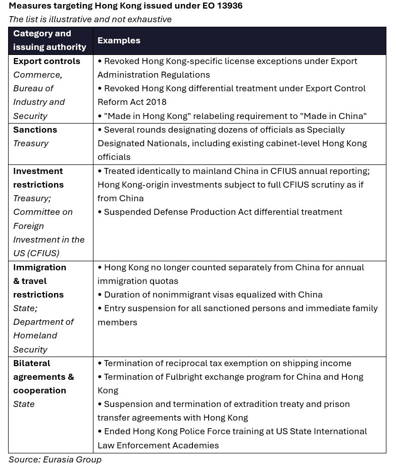

|
 |
|||
|
||||
What happened:On 17 July, the US opted not to renew an executive order (EO) dating from 2020 that eliminated Hong Kong’s preferential treatment relative to Mainland China. Our take:The decision is symbolically important for stabilizing US-China ties. President Donald Trump had signed the EO in July 2020 following the imposition of Hong Kong’s National Security Law, which curtailed the city’s civil liberties. Its expiration, alongside China’s Ministry of Commerce’s (MOFCOM) rare expression of “praise” for the Trump administration in its statement, points to a willingness by the White House to pursue limited de-escalation on the Hong Kong issue, amid broader efforts to stabilize the bilateral relationship. More broadly, the move confirms that Hong Kong is part of broader US-China trade and investment negotiations, with the Trump administration willing to trade away Hong Kong-related pressures. This is a major departure from bipartisan US policy of the past six years. According to Beijing, the US commitments on Hong Kong were made following the Madrid trade talks last September. The shift also indicates a further de-prioritization of Hong Kong’s human rights concerns for the Trump administration, reframing the issue as a negotiable component of diplomacy with Beijing. However, the EO’s expiration does not reverse most core policy effects. The EO led to a series of agency-level measures promulgated over the years, treating Hong Kong the same as Mainland China across areas such as immigration, export controls, and extradition agreements. These measures remain in place and are not automatically rescinded. The removal of sanctions on Hong Kong and mainland officials will likely be limited. Although the US Treasury Department has announced that individuals designated solely under the EO will be delisted, those sanctioned under separate statutory authorities—such as the Hong Kong Autonomy Act—will remain unaffected. As a result, any easing of sanctions will likely be restricted in practice, given that the cohort of officials designated exclusively under the EO is relatively small. Furthermore, while Treasury can no longer issue new sanctions under this EO moving forward, there are other authorities that still enable additional sanctions designations through annual State Department assessments. Watchpoint is whether the US rolls back existing implementation measures. Any such steps would more clearly indicate a shift toward the White House’s accommodative stance. However, additional meaningful rollbacks are currently unlikely. Statutory sanctions are expected to remain in place given bipartisan support in Congress for Hong Kong-related human rights measures, while easing export controls would run counter to prevailing national security and technology competition priorities. Less politically significant items such as the Fulbright exchange moratorium and visa restrictions could potentially be undone now through agency consultation. The extent to which measures are reversed would provide signposts on how far Trump wants to advance reconciliatory measures. Any rollback will likely be limited and highly targeted, depending on negotiations with Beijing.  |